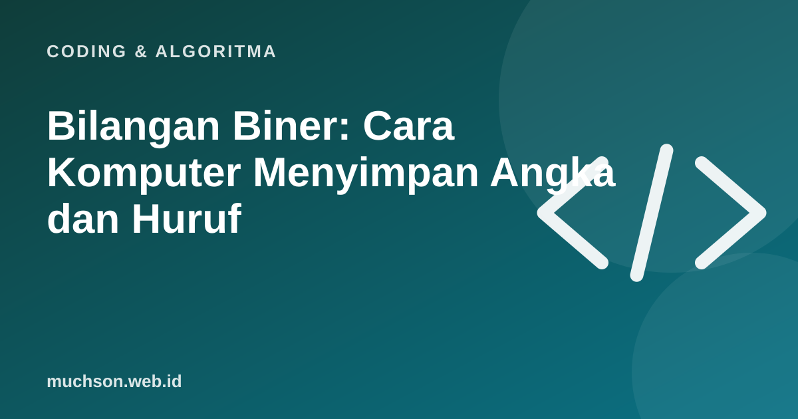

Beranda › Artikel › Coding & Algoritma
Coding & AlgoritmaBilangan Biner: Cara Komputer Menyimpan Angka dan Huruf
Semua yang ada di komputer, dari foto sampai pesan WhatsApp, pada akhirnya disimpan sebagai rangkaian nol dan satu. Itu terdengar menakutkan, tetapi aturannya sederhana dan Anda bisa menguasainya dalam beberapa menit.

Mengapa hanya 0 dan 1?
Perangkat elektronik paling andal membedakan dua keadaan: ada arus atau tidak ada, tegangan tinggi atau rendah. Dua keadaan itu dilambangkan 1 dan 0. Satu angka biner disebut bit, delapan bit disebut byte.
Bagaimana membacanya?
Pada bilangan desimal, setiap posisi bernilai kelipatan 10 (satuan, puluhan, ratusan). Pada biner, setiap posisi bernilai kelipatan 2: 1, 2, 4, 8, 16, 32, 64, 128. Jumlahkan nilai posisi yang bernilai 1.
Bagaimana huruf disimpan?
Huruf diberi nomor menurut tabel kode. Pada ASCII, huruf "A" bernomor 65, yaitu 01000001 dalam biner, dan "a" bernomor 97. Tabel modern seperti Unicode mencakup ribuan karakter, termasuk huruf non-Latin dan emoji, memakai lebih dari satu byte per karakter.
| Karakter | Nomor (desimal) | Biner (8 bit) |
|---|---|---|
| A | 65 | 01000001 |
| B | 66 | 01000010 |
| a | 97 | 01100001 |
| 0 | 48 | 00110000 |
Latihan cepat
Heksadesimal (basis 16) sering dipakai sebagai singkatan biner yang lebih ringkas: satu digit heksa mewakili empat bit. Itu sebabnya kode warna berbentuk #1E5AB2.